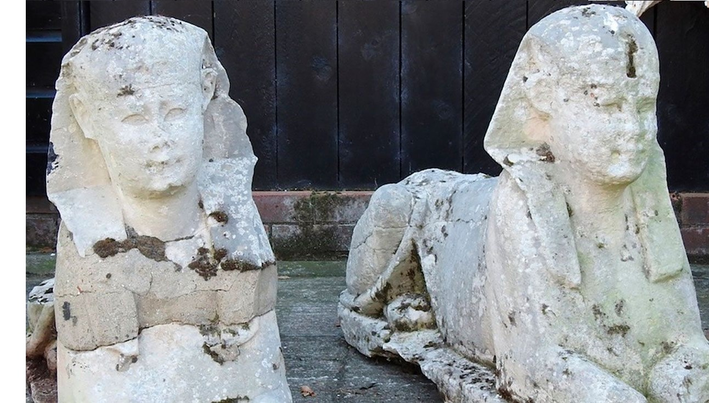

MUNDO
Familia descubre que dos esculturas de su jardín son esfinges del antiguo Egipto
En Reino Unido, una familia adquirió estas estatuas por unos cientos de libras esterlinas y las tuvieron durante años en su jardín, sin imaginarse que tenían un valor 500 veces mayor.
Una familia del condado de Suffolk, Inglaterra (Reino Unido), tenía dos esculturas que adornaban su jardín sin imaginarse su valor agregado, ya que no sabían que eran auténticas reliquias del antiguo Egipto. Al final, en una subasta se vendieron por casi 270.000 dólares. La casa de subastas Mander Auctioneers vendió el sábado 9 de octubre las dos estatuas con forma de esfinge por 195.000 libras esterlinas (265.400 dólares), una suma 500 veces mayor que el precio inicial, reportaron medios locales. El precio inicial era entre 300 y 500 libras esterlinas (408 y 680 dólares). Eso esperaba obtener la familia cuando contactó con la empresa para deshacerse de algunas pertenencias de su antigua vivienda, ya que emprendían una mudanza. De hecho, la puja comenzó en 200 libras y realmente no esperaban obtener más de 500. “Y luego la subasta se volvió loca”, señaló el subastador James Mander a la cadena estadounidense CNN. Quince minutos después, Mander Auctioneers recibió suficientes ofertas por teléfono e internet como para elevar el precio de las estatuas a 195.000 libras esterlinas. Una galería internacional de arte, cuyo nombre no se ha revelado, fue quien obtuvo la compra. “La opinión (que circulaba) es que eran ejemplares genuinos del antiguo Egipto, que de alguna manera habían pasado por la historia reciente como réplicas del siglo XVIII”, apuntaron los subastadores en un comunicado. La familia, atónita, contó que las había comprado hace unos 15 años por varios cientos de libras esterlinas en la región inglesa de Anglia Oriental. “Resulta que tienen miles de años y son genuinos. Así que es realmente asombroso”, declaró Mander. “Me pregunto dónde han estado durante los últimos 5.000 años. Es bastante increíble, de verdad”, agregó el subastador. Las esculturas, de más de un metro de largo, no se encontraban en buen estado. Ya fueron puestas a disposición de un equipo de especialistas para determinar su verdadero origen.